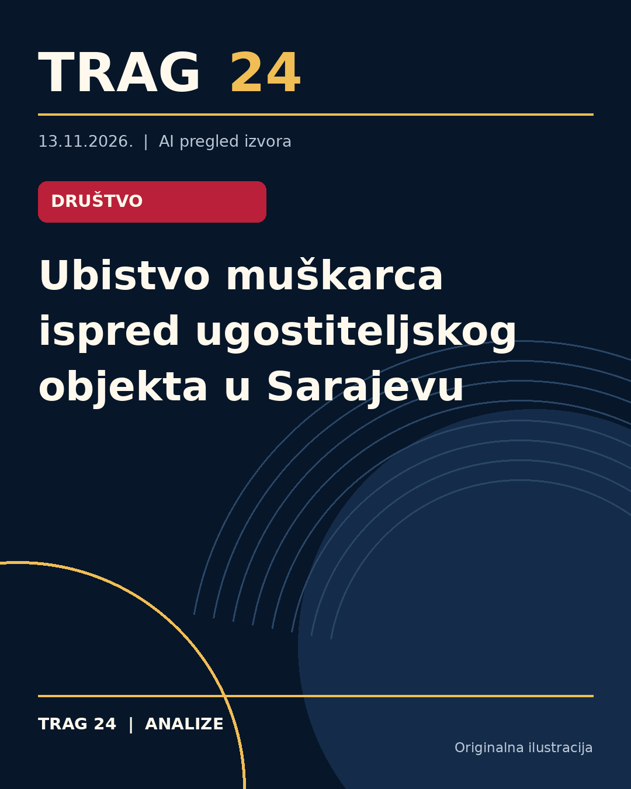

Ubistvo muškarca ispred ugostiteljskog objekta u Sarajevu

ŠTA SE DOGODILO
U ranim jutarnjim časovima došlo je do pucnjave ispred ugostiteljskog objekta u sarajevskoj ulici Zmaja od Bosne. Tokom incidenta ranjen je tridesetdvogodišnji muškarac, koji je ubrzo prevezen na Klinički centar Univerziteta u Sarajevu (KCUS), gde su lekari u 4 sata ujutro konstatovali smrt.
HRONOLOGIJA
Policija je obaveštena oko 2:30 časova o upotrebi vatrenog oružja na navedenoj lokaciji. Hitna pomoć je odmah reagovala i povređenog prevezla na KCUS. Istog jutra, u 4:00 časova, objavljena je vest o smrti ranjenog muškarca. Po dobijanju informacija, dežurni tužilac Kantonalnog tužilaštva Kantona Sarajevo rukovodio je uviđajem na mestu događaja. Trenutno traje intenzivna potraga za osumnjičenim izvršiocem.
ŠTA NAVODE IZVORI
Prema informacijama portparolke MUP-a KS Mersihe Novalić, do upotrebe vatrenog oružja došlo je oko 2:30 časova u ulici Zmaja od Bosne. Navedeno je da policijska uprava Novo Sarajevo vodi istragu. "Policijski službenici intenzivno tragaju za muškarcem za koga postoji sumnja da je izvršilac ovog krivičnog dela," navode izvori. Jedan od izvora navodi da je stradali muškarac bio radnik obezbeđenja u jednom sarajevskom klubu.
ŠTA JE POTVRĐENO
Potvrđeno je da je muškarac star 32 godine pogođen vatrenim oružjem i da je preminuo na KCUS-u. Policija i tužilaštvo su uključeni u istragu, a pretražuje se osoba za koju se sumnja da je izvršila krivično delo. Lokacija događaja je ulica Zmaja od Bosne u Sarajevu.
ŠTA NIJE POTVRĐENO
Nije potvrđeno ko je tačno počinilac pucnjave. Takođe, detalji o motivu incidenta ili bilo kakve druge okolnosti koje su dovele do upotrebe vatrenog oružja nisu poznate. Nije zvanično potvrđeno bilo kakvo identitetno ili druge lične informacije osumnjičenog osim što je opisana kao mlađi muškarac.
ŠTA OSTАJE OTVORENO: Ostaje nepoznato zbog čega je došlo do pucnjave, kao i identitet i motiv osumnjičenog za izvršenje krivičnog dela. Dalji tok istrage i eventualne zvanične nalaze tužilaštva očekuje se u narednom periodu.
Izvori
- https://www.blic.rs/vesti/hronika/radnik-obezbedjenja-ubijen-ispred-lokala-u-sarajevu-potraga-za-mladjim-muskarcem/5ccwh4z
- https://nova.rs/vesti/svet/pucnjava-ispred-kafane-u-sarajevu-ubijen-muskarac/
- https://n1info.rs/region/pucnjava-ispred-kafane-u-sarajevu-ubijen-muskarac/
Ova analiza je pripremljena uz pomoć veštačke inteligencije na osnovu javno dostupnih izvora. Navodi izvora nisu nužno nezavisno potvrđeni.